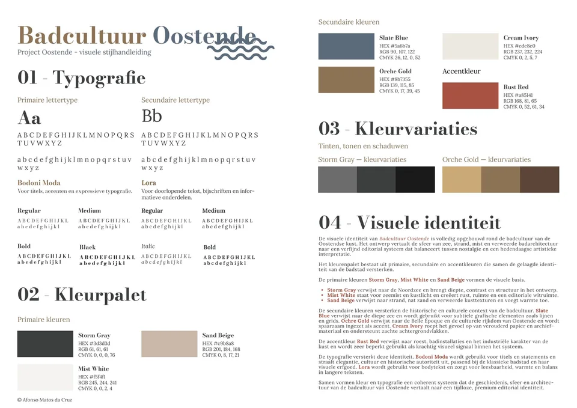
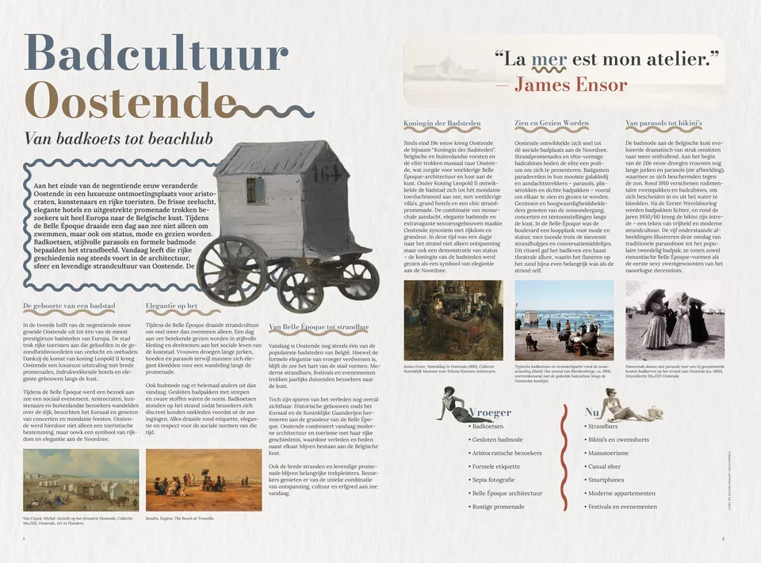

How do you translate Ostend’s coastal heritage into a contemporary visual language?
Ostend’s bathing culture peaked in the Belle Époque. Bathing machines pulled into the surf by horses, the architecture along the seafront, parasols and formal swimwear are the starting point, together with the art of James Ensor.
The style guide fixes the identity. The palette is Storm Gray, Sand Beige, Mist White and Ochre Gold, with Rust Red as an accent that refers to rust and bathing installations. Headings are set in Bodoni Moda, body text in Lora.
In print it all comes together in the editorial spread ‘Van badkoets tot beachclub’ (from bathing machine to beach club). I animated the Ensor character in After Effects.
Two websites, built with HTML, CSS and JavaScript, carry the research online: a general guide to Ostend and James Ensor, and a site on the history of beachwear and bathing rituals.



Websites for this project
These are school websites that open on their own. They load fonts from Google (see privacy).